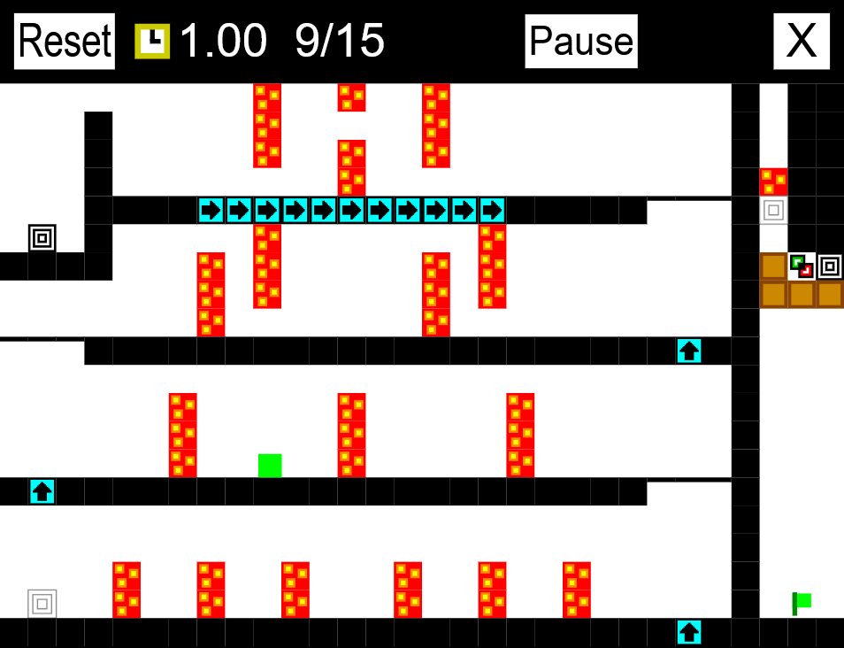
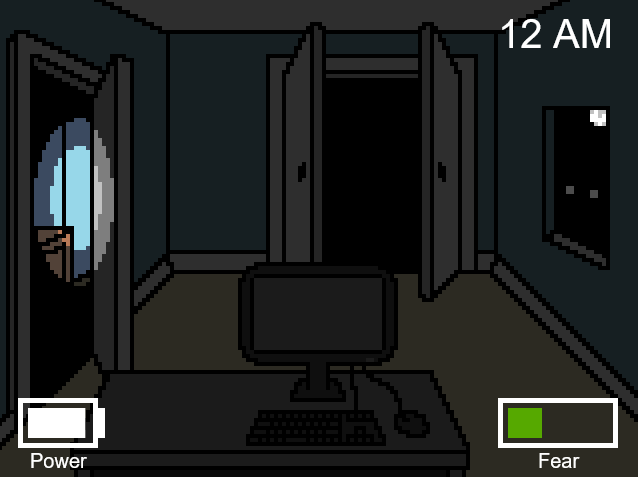
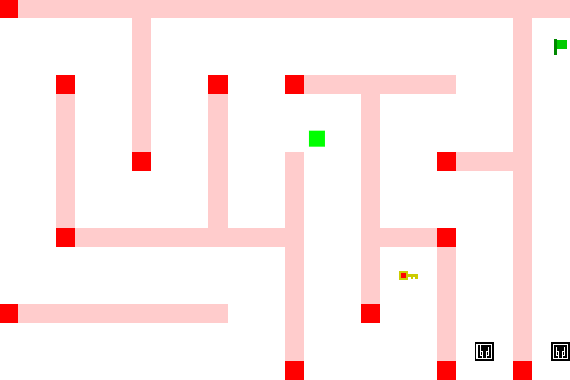
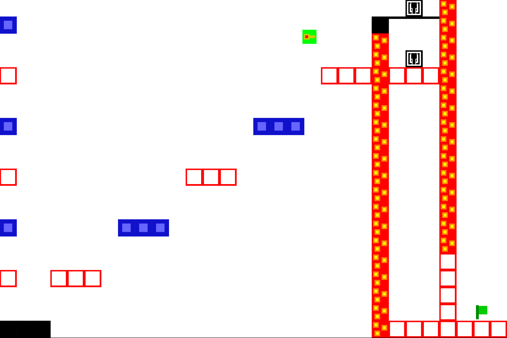
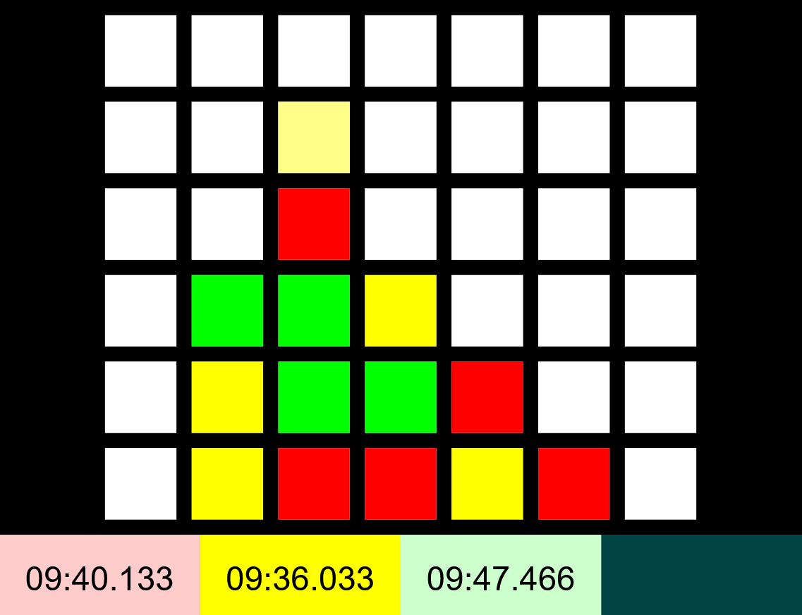
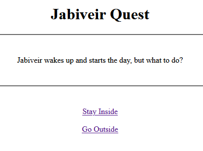
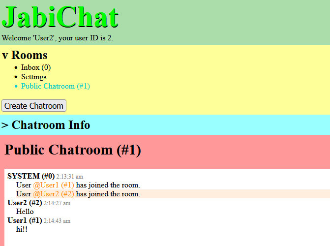

Games
(All games, except those otherwise specified, are browser-based and not mobile-compatible.)

Jabiveir: The Adventure 2
A sequel to the first platformer game in the series, Jabiveir: The Adventure, with the same premise; reach the green flags. However, Jabiveir now has a mid-air Dash ability, there are several more unique tiles, and time can be slowed or sped up.
Contains 15 main levels (along with a tutorial) and a level creator, from which custom levels can be shared via level codes. Replays of completed levels can also be saved and shared via replay codes.
My biggest and finest game yet, in my opinion.
Play Jabiveir: The Adventure 2

Five Nights at Jabiveir's
A parody of Five Nights at Freddy's. In this "horror" game, you must use your flashlight to defend against Jabiveir until 6 AM, all the while managing battery and fear levels.
Contains 5 main nights, a secret sixth night, and a seventh customizable night, where difficulties can be set manually. There is also a set of extra challenges and cheats to make the game easier or harder.
Features magnificent MS Paint art.
Play Five Nights at Jabiveir's

JabiGear 2 (1): Solid Veir
A parody of Metal Gear 2: Solid Snake. In this top-down "stealth" game, Jabiveir must weave past enemies and their detection areas to reach the green flags. At the end of the game, Jabiveir can shoot bullets at enemies, aiming with the cursor.
Contains a tutorial level for movement, 7 main levels, a tutorial level for shooting, and a final boss level.
Was made in just 3 days as a birthday gift, repurposing the J:TA engine.
Play JabiGear 2 (1): Solid Veir

Jabiveir: The Adventure
A simple platformer game in which Jabiveir must traverse deadly obstacles to reach the green flags.
Contains a tutorial level for movement and 15 main levels.
The first game on the site to use JavaScript. Most of the physics logic was ripped straight from Mario 64.
Play Jabiveir: The Adventure

Connect 4*
A simple browser version of Connect 4 with some additional customization, to be played locally on a shared keyboard.
Contains basic Connect 4 functionality, plus customization for board size, the connection length required to win, and the number of players, along with a turn timer.
Was made at the request of a buddy, and submitted as a final project in a Computer Science A class.
Play Connect 4*

Jabiveir Quest
(Mobile-compatible)
A very simple text-based choose-your-own-adventure game following Jabiveir's day, and perhaps uncovering an evil scheme.
Choices are made by following hyperlinks to reach different pages. Contains 28 possible endings and 14 possible ways to die.
This was the first game I ever made for the website, so please excuse the poor writing.
Play Jabiveir Quest
Software

JabiChat
A simple, self-hosted, browser-based messaging app. Create a chatroom, invite friends, and talk!
Supports HTML formatting for messages, (non-stored) file sharing, pinging users, editing/deleting messages, et cetera. Requires SQL and NodeJS for the host to run the server, as well as port-forwarding if users are not on LAN. Guides for hosting and using the app are included.
WARNING: This program has basically ZERO security (currently)!! Do not send any sensitive information over this app!
This took forever to make, and is still not very good, but I'm proud of it.
Download server files to host
More software will be added in the future. Hopefully.
About
This website was started on June 17th, 2022 (now known as Jabiveir Day), purely to host Jabiveir Quest, because I wanted to make a fun, simple, browser-based game for my friends. Since then, I have continued making games and other projects for fun, and I host them here. Everything on this site, unless directly stated otherwise, was made entirely by me from scratch, using mostly self-taught programming knowledge.
Contact me at jabiveir2@gmail.com or at jabiveir on Discord.